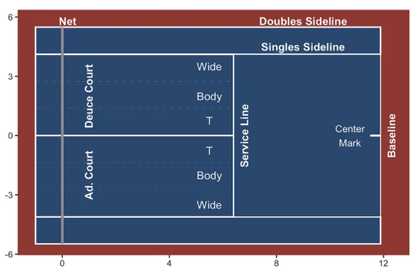
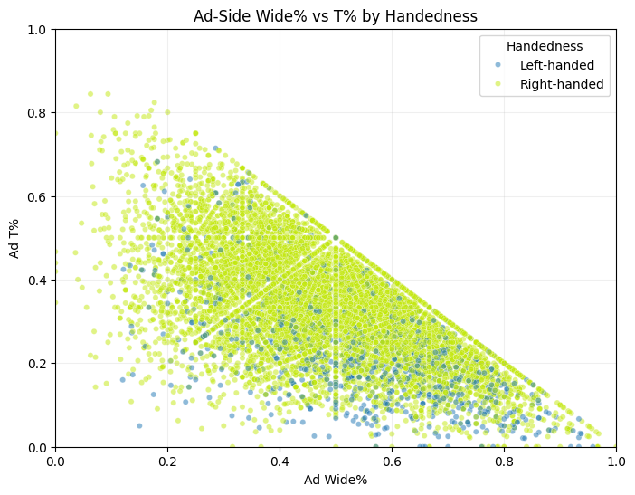
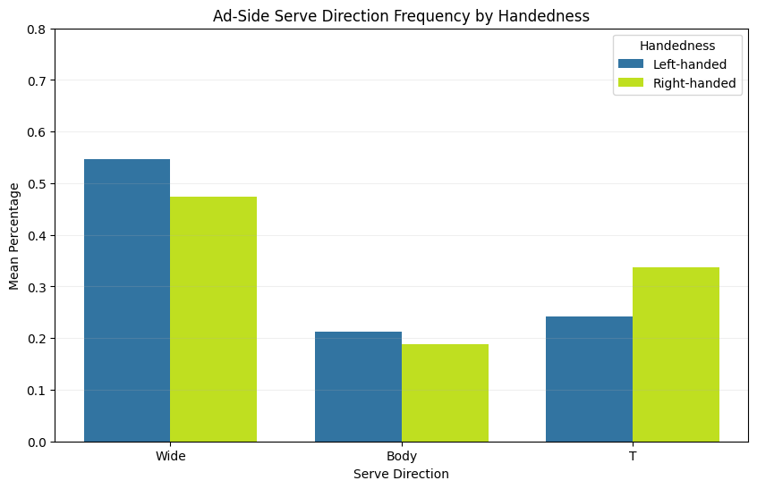
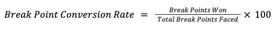
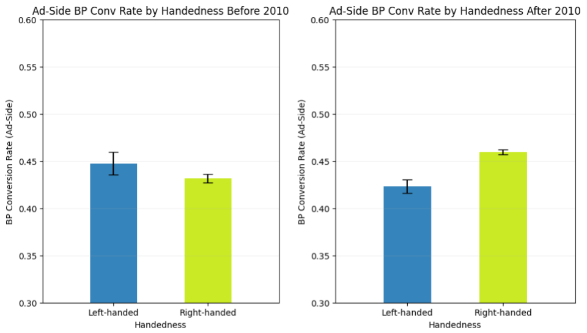
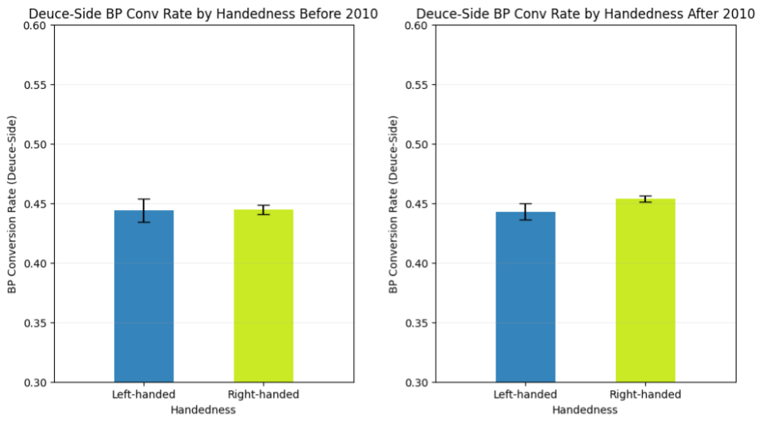
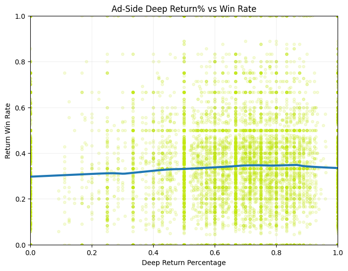
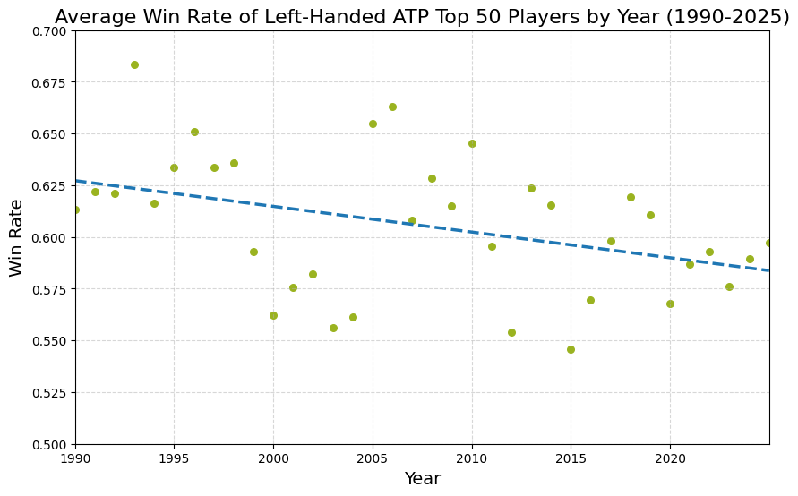

Is the Left-Handed Ad-Vantage Dying?
By Kelly Gao | June 11, 2026
Rafael Nadal, 2015 French Open, Photo by Clive Brunskill
Introduction
For decades, tennis fans believed in the left-handed advantage—especially on the ad side. Even when I first started learning tennis, I was told this “fact”, even though I’m right-handed, unfortunately. The more I watch the sport, the more people I see reiterating this claim. Why would I question it? After all, the existence of Rafael Nadal and his 22 Grand Slam titles should be enough to prove this claim tenfold.
As much as this common consensus has been ingrained into my brain, it has also undoubtedly planted a deep root of doubt into the back of my head. Can a belief established decades ago still be applicable to current-day tennis? Do left-handed players still exert the same amount of dominance as they once did on the ad-side? Do left-handed players have any advantage at all?
Using data science to analyze tennis statistics from men’s singles games and ATP rankings during the past 30 years, I will be finding out whether left-handed players still have the advantage people think they have.
Why Do People Believe in Left-Handed Dominance?
The simpler idea is that players just aren’t used to hitting with left-handed players, because there are less of them. However, most shots are hit with top-spin anyways, and it will only be in the rare case where a left-handed player applies side-spin on a slice in the opposite direction of what the opponent expects, which may throw the opponent off. The main reason actually lies within which side of the court both players are standing.
As a tennis player, I can vouch that my forehand swing is stronger and more precise than my backhand. This difference is applicable to most tennis players, even the pros. A player’s forehand utilizes their pectoral muscles and abdominal muscles for bigger strength and a larger body rotation, a deadly combination for a shot.
With left-handed players on the ad-side, they have access to their forehand to hit a right-handed player’s worst nightmare: a rapid cross court shot to their backhand. Sure, this could be returnable in the middle of a rally—but the same cannot always be said for serves. In a serve, where a left-handed player builds up and concentrates all their power into a ball towards their opponent's weakest stance, the ball becomes much harder to return.
Well, of course, this advantage can only exist if left-handed players still utilize wide, cross court shots in their serves, returns, and rally shots.
Serve Patterns

There are three possible directions for a player to serve—wide, body, and T—into the opposite service box. The greatest advantage for lefties lies in the ad court wide shot, which 1) maximizes the power of the shot, 2) targets the opponent’s backhand, assuming they’re right-handed, and 3) pulls the opponent out of the court. Body shots are neutral for either player, but a T-shot, which is down the intersection right between the service boxes, would be disadvantageous towards the server on the ad-side. The ball would be shot right at a right-handed player’s forehand, and THWACK—they return a winner. So, a lefty would probably want to avoid T serves.

In the figure above, I plotted every match from 2010 and onward that is recorded in Match Charting Project (MCP). For every match, there is one point for each player, showing the percent of their serves that were T or wide serves when they were on the ad-side.
After color-coding the handedness of the players, there seems to be an apparent clustering of lefties that prefer wide shots more on the ad-side, backing up the pro-left-handed argument. However, on further inspection, this pattern isn’t exclusive to lefties; right-handed players are also clustering around the same area! Just because left-handed players are serving wide more on the ad-side doesn’t necessarily mean they’re exploiting it if right-handed players show the same pattern.

For this bar chart, I took the average percent of wide, body, and T shots from each player every match when they’re serving on the ad-side. Lefties show a significant difference when it comes to wide shots, which suggests that left-handed players are still trying to capitalize on wide serves while avoiding T serves. On the other hand, this advantage is counteracted by the much higher percentage of T serves from right-handed players on the ad-side, which happens to be in the direction of a lefty's backhand as well. Sure, left-handed players are serving wide when possible, but that’s also the right-handed players’ most common type of serve on the ad-side, and the greater increase in T shots just makes it harder for left-handed receivers.
Break Point Conversion Rates
Returns are just as important as serves when it comes to winning a point. In tennis, one of the most looked-at statistics to judge the effectiveness of a player’s returns is their break point conversion rate (BP Conv%). In other words, BP Conv% measures the efficiency of a player in winning the game while receiving when they have a chance in breaking their opponent’s serve. A break point is when the receiver is just one point away from winning the game, so it also judges the ability of the player to act under pressure. The specific calculations are as follows:

Historically, tennis commentators often say “Break points favor the lefty.” But, why is this? Well, when a lefty returns on the ad-side, the opponent, probably right-handed, is most likely to serve wide, as shown previously, right into the lefty’s forehand, and then the lefty can shoot it back cross-court into the right-handed opponent’s backhand. This way, the lefty quickly gains control of the point and wins the game.

In the matches before 2010, as shown in the graph on the left, we can easily notice the dominance of left-handed players on break points when on the ad-side. But, in 2010 and after, shown in the right graph, this edge rapidly decreases, and right-handed players almost have a 5% greater BP Conv% than left-handed players. Talk about a major falloff!

This change isn’t just noticed in the ad-side; it’s there on the deuce side too. Prior to 2010, tennis players had the same average BP Conv% on the deuce-side regardless of their handedness. But, in 2010 and after, right-handed players began to have a slight edge with break points on the deuce-side in addition to the ad-side.
These charts suggest that developments in tennis playstyles have rendered the left-handed advantage when it comes to returning serves on the ad-side obsolete. Adjustments in player positioning, strengthening of two-handed backhands, and convergence of serve patterns have essentially neutralized the traditional left-handed ad-side advantage.
Return Depths
The return depth describes how deep into the court the receiver manages to return a serve. In simple terms, the deeper the return, or the closer the ball bounces near the opponent’s baseline, the harder it is for the server to produce a strong shot. Regardless of court side or handedness, return depth is just as important for any tennis player receiving a serve.
Even so, many still believe that left-handed players have the advantage when returning on the ad-side, for the same reasons as the BP Conv% argument from the previous section.

After plotting the return win rate vs percentage of returns that are deep returns (within 5 feet of the baseline), there is no meaningful correlation between deep return percentage and return win rate. The blue LOWESS line is almost flat, the opposite of the upward trend you might expect. Return depths just don’t give left-handed players on the ad-side the boost that people expect.
Long Term Trends + Conclusions

By plotting the average win rate of the ATP Top 50 players that are also left-handed every year from 1990-2025, the final graph ties everything together. After analyzing the nuance, specific statistics, the average yearly win rate is the confirmation needed to prove previous calculations: the trend shows a clear decline in left-handed win rate over time.
The conclusion is unavoidable—the left-handed advantage, especially on the ad-side, has been slowly eroding year by year, match by match, until modern tennis has almost erased it entirely. What was once a tactical edge is now historic, and gradually, the remaining remnants of it will fade as well.